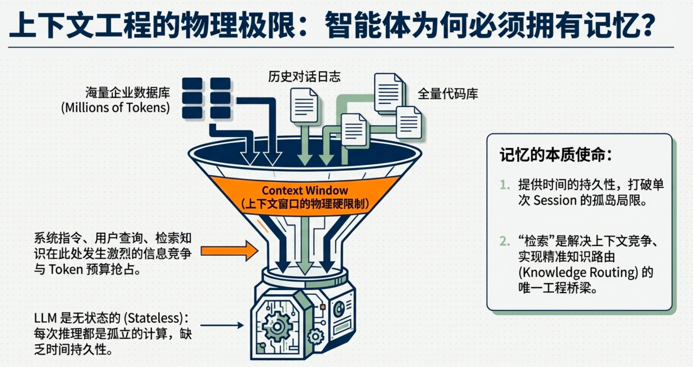
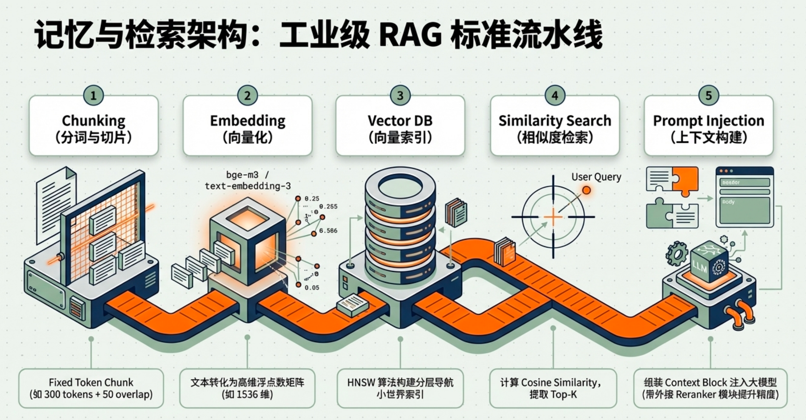

6 Memory and Retrieval
6.1 Why Intelligent Agents Need Memory
Intelligence without memory is fundamentally limited. An agent that cannot retain information beyond the immediate interaction behaves as if every moment were its first. While modern language models demonstrate impressive reasoning and language capabilities, they are inherently stateless systems. Each inference is performed within a bounded context window and does not persist beyond the current session unless external mechanisms store and retrieve information.

Because of this limitation, an intelligent agent must rely on a memory system to maintain continuity, accumulate knowledge, and operate effectively across time.
6.1.1 The Stateless Nature of Language Models
Large language models generate responses based solely on the tokens provided in their current input context. Once a response is produced, the model does not retain any internal record of that interaction.
In practical terms, this means:
The model does not remember past conversations unless they are explicitly included again in the prompt.
The model does not accumulate knowledge from interactions.
The model cannot maintain long-term state about users, tasks, or environments.
Every interaction is therefore treated as an isolated reasoning event. Without an external memory system, an agent built on top of such a model effectively forgets everything after each response.
6.1.2 The Limits of Context Windows
The context window defines the maximum amount of information that a model can process at once. Even with large context windows, this capacity is still finite.
In real-world systems, the information required for intelligent behavior often exceeds this limit. For example:
enterprise documentation
large software repositories
long-term conversation histories
accumulated user preferences
historical task outcomes
Because all of this information cannot fit into the model’s context simultaneously, a mechanism is required to select and retrieve only the relevant pieces of knowledge when needed. Memory systems enable this by storing information externally and allowing the agent to access it dynamically.
Examples include:
remembering a user’s preferences across conversations
tracking the progress of a multi-step task
recalling previous decisions or results
referencing knowledge acquired earlier
Without memory, an agent cannot maintain this continuity. Each interaction would require reconstructing all relevant information from scratch, which is inefficient and often impossible.
Memory therefore provides temporal persistence, allowing agents to carry information forward and maintain coherence across extended interactions.
6.1.3 Persistence Across Time
Intelligent behavior typically unfolds over time rather than within a single interaction. Agents must often maintain continuity across multiple steps, sessions, or tasks.
6.1.4 Learning from Experience
Another fundamental function of memory is enabling agents to accumulate experience. Human intelligence relies heavily on recalling past successes, failures, and observations to guide future behavior. Artificial agents require a similar mechanism.
By storing records of previous interactions, actions, and outcomes, an agent can later retrieve this information to:
avoid repeating past mistakes
reuse successful strategies
adapt behavior based on prior results
This process transforms an agent from a purely reactive system into one capable of experience-driven improvement.
6.1.5 Memory as the Foundation of Persistent Intelligence
Taken together, these limitations reveal an important principle:
An intelligent agent is not defined solely by its reasoning engine. It also requires a structured memory system that stores information beyond the model itself.
In practical agent architectures, memory becomes the long-term knowledge substrate, while the language model functions as a reasoning engine that operates over the information retrieved from this memory.
Through memory, agents gain:
continuity across interactions
access to large knowledge sources
the ability to accumulate experience
personalization for individual users
For this reason, memory is not merely an optional feature but a fundamental component of any system that aims to exhibit persistent intelligence.
6.2 Why Retrieval Is Necessary
Memory alone does not make an intelligent system effective. Storing information is only the first step; the agent must also be able to locate and access the relevant pieces of knowledge when needed. Retrieval provides the mechanism that connects stored information with the reasoning process of the model.
6.2.1 The Knowledge Access Problem
In real-world environments, the amount of information available to an agent is extremely large. Knowledge may include documentation, conversation histories, databases, tool descriptions, task logs, and external resources. Even moderately sized systems quickly accumulate far more information than a model can process simultaneously.
The central challenge therefore becomes knowledge access: how an agent identifies which pieces of stored information are relevant to a given question or task.
If an agent attempted to load all stored information into the model at once, several problems would arise. The context window of the model would be exceeded, computational cost would increase dramatically, and irrelevant information would dilute the model’s attention. Consequently, a mechanism is required to filter and select only the information that matters.
Retrieval systems solve this problem by searching through stored memory and returning a small subset of the most relevant content.
6.2.2 Information Selection and Relevance
Not all stored information is equally useful in every situation. A system may contain thousands or millions of documents, but most of them will be irrelevant to a specific query.
Retrieval therefore performs information selection. Given a query or task description, the retrieval system evaluates the stored data and ranks potential matches according to their relevance.
This selection process serves several important purposes:
reducing the amount of information that must be processed by the model
improving response accuracy by focusing on relevant knowledge
lowering computational cost by avoiding unnecessary context
increasing efficiency in large knowledge bases
By filtering the available knowledge, retrieval acts as a gatekeeper between memory storage and the reasoning engine.
6.2.3 Overcoming Context Window Constraints
Language models operate within a fixed context window, which limits how much information they can process in a single inference. Even though modern models support increasingly large contexts, this limitation still plays a crucial role in system design.
In many real-world applications, the available knowledge base may contain millions of tokens or more. It is neither practical nor desirable to include all of this information in a prompt. Retrieval allows the system to compress a large knowledge space into a small, relevant context.
Instead of providing all possible knowledge, the system retrieves only a handful of passages or records that are most likely to help answer the query. These retrieved pieces of information are then inserted into the model’s prompt, enabling the model to reason using external knowledge without exceeding its context limits.
6.2.4 Retrieval as Knowledge Routing
Another way to understand retrieval is to view it as a knowledge routing mechanism. The memory system contains a large network of stored information, but the reasoning model requires only a small portion of that knowledge for any given task.
Retrieval determines where in the knowledge space the agent should look. It routes the user’s query toward the relevant documents, experiences, or facts stored in memory.
This routing function is essential for scalable intelligence. As the amount of stored knowledge grows, the importance of efficient retrieval increases. Without it, the agent would be unable to navigate its own knowledge base.
6.2.5 Retrieval as an Extension of Model Attention
In modern AI architectures, retrieval can also be interpreted as an extension of the model’s attention mechanism.
Within a transformer model, attention allows the system to focus on the most relevant tokens within the current input sequence. Retrieval performs a similar function, but across a much larger external knowledge space.
Instead of attending only to tokens already present in the prompt, the system first retrieves relevant information from external memory and then injects it into the prompt. In this sense, retrieval acts as external attention over stored knowledge.
This perspective helps explain why retrieval is so powerful. It expands the model’s effective knowledge capacity beyond the limits of its parameters and context window.
6.2.6 Retrieval as the Bridge Between Memory and Reasoning
Memory and reasoning are two essential components of intelligent systems, but they operate in different domains. Memory stores information over time, while reasoning processes information during a specific interaction.
Retrieval forms the bridge between these two components. It connects stored knowledge with the model’s reasoning process by selecting and delivering relevant information when needed.
Through retrieval, an agent can:
access large external knowledge bases
recall past experiences and interactions
incorporate domain-specific documentation
dynamically adapt its responses to new information
Without retrieval, memory would remain inaccessible to the reasoning engine. With retrieval, stored knowledge becomes an active resource that supports intelligent behavior.
6.3 What Memory Is
In intelligent agents, memory refers to the persistent storage of information outside the reasoning model that can be accessed during future interactions. Unlike the internal parameters of a language model, which encode general patterns learned during training, memory stores specific pieces of information that arise during the agent’s operation.
This distinction is important. The parameters of a model represent statistical knowledge learned from large datasets, but they cannot easily incorporate new information after training. Memory systems, in contrast, allow agents to record and reuse information dynamically. Through memory, an agent can accumulate knowledge over time rather than starting from a blank state in every interaction.
6.3.1 Memory as External Knowledge Storage
For most modern agent architectures, memory exists outside the model itself. The language model functions as a reasoning engine, while memory acts as a knowledge repository.
This repository may contain many types of information, including:
documents and reference materials
previous conversations
user preferences and profiles
execution histories of tasks
structured knowledge such as databases or graphs
Because this information is stored externally, it can grow far beyond the size limitations of the model’s context window. The agent can therefore maintain knowledge that persists across sessions, tasks, and interactions.
6.3.2 Short-Term and Long-Term Memory
Memory systems are often divided into two broad categories depending on how long the information is intended to persist.
Short-term memory typically represents information that is relevant within the current interaction. Examples include conversation history, temporary task variables, or intermediate reasoning steps. This information usually resides within the prompt context provided to the model and is discarded once the task is completed.
Long-term memory, in contrast, stores information intended to persist across many interactions. Examples include documents, accumulated experiences, user profiles, and knowledge bases. This type of memory is stored in external databases or storage systems and can be retrieved whenever needed.
The combination of short-term and long-term memory enables an agent to operate both within a single reasoning session and across extended periods of time.
6.3.3 Types of Agent Memory
In practice, agent systems often organize memory into several functional categories.
One common category is context memory, which captures the immediate conversation or task state. This memory helps the agent maintain coherence during an ongoing interaction.
Another category is knowledge memory, which contains domain knowledge such as documentation, manuals, research papers, or technical references. This information allows the agent to answer questions or perform tasks that require specialized knowledge.
A third category is experience memory, which records past interactions and outcomes. By recalling previous actions and results, an agent can reuse successful strategies and avoid repeating mistakes.
6.4 What Retrieval Is
Retrieval is the process by which an agent locates and selects relevant information from memory in response to a query or task. While memory stores information, retrieval determines how that information becomes accessible to the reasoning system.
In large memory stores containing thousands or millions of records, simply storing data is not sufficient. The agent must also be able to efficiently identify which pieces of information are useful for the current problem. Retrieval performs this selection.
6.4.1 Querying Memory
Retrieval typically begins with a query, which represents the information need of the system. The query may originate from a user’s question, from the agent’s internal planning process, or from the requirements of a task being executed.
Once a query is formed, the retrieval system searches the memory store for items that are related to the query. These items might be documents, text passages, structured records, or previous experiences.
The retrieval system evaluates potential matches and returns a subset of results that appear most relevant. These results are then passed to the reasoning model as additional context.
6.4.2 Finding Relevant Information
The core objective of retrieval is relevance. Among all stored information, the system must identify which pieces are most likely to help solve the current problem.
Different retrieval methods approach this problem in different ways. Some methods rely on keyword matching, identifying documents that share important terms with the query. Others use semantic similarity, representing both queries and documents as vectors in a high-dimensional space and retrieving items whose meanings are closest to the query.
Regardless of the specific method, the goal remains the same: reducing a large body of stored information into a small set of highly relevant knowledge items.
6.4.3 Delivering Knowledge to the Reasoning Process
Once relevant information has been retrieved, it must be integrated into the reasoning process of the agent. Typically, this information is inserted into the prompt context of the language model alongside the user’s query.
The model can then read the retrieved information and incorporate it into its reasoning and response generation. In this way, retrieval allows the model to use knowledge that lies outside its internal parameters.
This mechanism effectively extends the model’s capabilities. Instead of relying solely on the knowledge encoded during training, the agent can dynamically access external information sources whenever necessary.
Through this process, retrieval transforms stored memory into active knowledge that participates directly in reasoning and decision-making.
6.5 Mechanisms Behind Retrieval
Retrieval systems allow an agent to locate relevant information from a large memory store. While the concept of retrieval may appear simple, modern retrieval systems rely on several underlying mechanisms that enable efficient and meaningful search over large collections of data.
Three core mechanisms form the foundation of most modern retrieval pipelines:
text embeddings
similarity search
ranking and filtering
Together, these mechanisms allow an agent to transform natural language queries into mathematical representations, search large knowledge bases efficiently, and return the most relevant pieces of information for reasoning.
6.5.1 Text Embeddings
The first step in modern retrieval systems is transforming text into vector representations, commonly known as embeddings.
An embedding is a numerical vector that captures the semantic meaning of a piece of text. Instead of comparing words directly, retrieval systems compare vectors in a high-dimensional space. Texts that are semantically similar will appear closer together in this vector space.
For example:
"How does Kubernetes work?"
"What is the architecture of Kubernetes?"Although the wording differs, their embeddings will be close in vector space because they share similar meanings.
Embedding models perform this transformation. Popular embedding models include those from Sentence Transformers, OpenAI, and other providers.
Below is a minimal Python example that converts text into embeddings using a widely used open-source model.
Install the dependency:
pip install sentence-transformersPython code:
from sentence_transformers import SentenceTransformer
# Load embedding model
model = SentenceTransformer("all-MiniLM-L6-v2")
sentences = [
"Kubernetes is a container orchestration platform.",
"Docker is used to build container images.",
"Machine learning models can process natural language."
]
# Generate embeddings
embeddings = model.encode(sentences)
print("Embedding shape:", embeddings.shape)
print("First embedding vector (truncated):")
print(embeddings[0][:10])Output：
modules.json: 349B [00:00, 117kB/s]
config_sentence_transformers.json: 116B [00:00, 113kB/s]
README.md: 10.5kB [00:00, 1.03MB/s]
sentence_bert_config.json: 53.0B [00:00, 234kB/s]
config.json: 612B [00:00, 1.04MB/s]
model.safetensors: 100%|██████████████████████████████████████████████████████████████████████████████████| 90.9M/90.9M [00:01<00:00, 66.0MB/s]
Loading weights: 100%|████████████████████████████████████████████████████████████████████████████████████| 103/103 [00:00<00:00, 15270.88it/s]
BertModel LOAD REPORT from: sentence-transformers/all-MiniLM-L6-v2
Key | Status | |
------------------------+------------+--+-
embeddings.position_ids | UNEXPECTED | |
Notes:
- UNEXPECTED :can be ignored when loading from different task/architecture; not ok if you expect identical arch.
tokenizer_config.json: 350B [00:00, 574kB/s]
vocab.txt: 232kB [00:00, 530kB/s]
tokenizer.json: 466kB [00:00, 1.99MB/s]
special_tokens_map.json: 112B [00:00, 158kB/s]
config.json: 190B [00:00, 328kB/s]
Embedding shape: (3, 384)
First embedding vector (truncated):
[ 0.02884705 0.00714916 0.0197481 -0.04852731 -0.03547366 0.01610341
-0.04197877 -0.01016801 0.04625584 0.04374099]If the code runs very slowly, you can set a mirror by running
export HF_ENDPOINT=https://hf-mirror.com. If you want to specify the download path, useexport HF_HOME=xxx.
This program converts sentences into numerical vectors that can later be compared for semantic similarity.
6.5.2 Similarity Search
Once texts have been converted into embeddings, the retrieval system can compare vectors to determine how similar two pieces of text are.
A common similarity metric is cosine similarity, which measures the angle between two vectors. If two vectors point in similar directions, their cosine similarity will be close to 1, indicating semantic similarity.
Retrieval systems use similarity scores to identify which stored documents are closest to the query vector.
Below is a fully runnable example that performs similarity search using embeddings.
from sentence_transformers import SentenceTransformer
from sklearn.metrics.pairwise import cosine_similarity
# Load model
model = SentenceTransformer("all-MiniLM-L6-v2")
documents = [
"Kubernetes manages containerized applications.",
"Python is a popular programming language.",
"Vector databases store embeddings for semantic search.",
"Docker is used to create containers."
]
# Convert documents into embeddings
doc_embeddings = model.encode(documents)
# Query
query = "How are containers orchestrated?"
# Convert query to embedding
query_embedding = model.encode([query])
# Compute similarity
scores = cosine_similarity(query_embedding, doc_embeddings)[0]
# Rank results
ranked = sorted(zip(documents, scores), key=lambda x: x[1], reverse=True)
print("Query:", query)
print("\nTop Results:\n")
for doc, score in ranked:
print(f"{score:.3f} {doc}")When you run this program, it will rank the documents according to how relevant they are to the query.
Output：
Query: How are containers orchestrated?
Top Results:
0.531 Docker is used to create containers.
0.439 Kubernetes manages containerized applications.
0.050 Vector databases store embeddings for semantic search.
0.028 Python is a popular programming language.6.5.3 Ranking and Filtering
Similarity search often produces a set of candidate documents, but additional processing may be required to determine the final results. This stage is known as ranking and filtering.
Ranking determines which retrieved items should appear first, while filtering removes irrelevant or low-quality matches.
Common ranking strategies include:
sorting by similarity score
combining semantic similarity with keyword matching
applying domain-specific filters
In large retrieval systems, ranking may involve multiple stages. A fast search method first retrieves a broad set of candidates, and a more precise model then re-ranks them to produce the final results.
Below is a simple extension of the previous example that retrieves only the top results.
from sentence_transformers import SentenceTransformer
from sklearn.metrics.pairwise import cosine_similarity
model = SentenceTransformer("all-MiniLM-L6-v2")
documents = [
"Kubernetes manages containerized applications.",
"Python is a popular programming language.",
"Vector databases enable semantic search.",
"Docker builds container images.",
"Transformers are neural networks used in language models."
]
doc_embeddings = model.encode(documents)
query = "How do systems search embeddings?"
query_embedding = model.encode([query])
scores = cosine_similarity(query_embedding, doc_embeddings)[0]
# Combine documents with scores
results = list(zip(documents, scores))
# Sort by similarity
results.sort(key=lambda x: x[1], reverse=True)
top_k = 3
print("Top", top_k, "results:\n")
for doc, score in results[:top_k]:
print(f"{score:.3f} {doc}")This example retrieves the three most relevant documents for a given query.
Output：
Top 3 results:
0.514 Vector databases enable semantic search.
0.278 Transformers are neural networks used in language models.
0.180 Docker builds container images.6.5.4 From Mechanisms to Retrieval Pipelines
In real-world systems, these mechanisms are combined into a retrieval pipeline:
convert documents into embeddings
store embeddings in a searchable index
convert queries into embeddings
perform similarity search
rank and filter results
deliver retrieved content to the language model
This pipeline forms the core of modern retrieval-augmented systems, allowing agents to access large external knowledge bases while maintaining efficient reasoning within the model’s context limits.
6.6 Implementing Memory and Retrieval Systems
Implementing memory and retrieval in an agent system means turning a conceptual pipeline into a working architecture. At the implementation level, the core task is straightforward: store information outside the language model, retrieve the most relevant pieces when needed, and inject them back into the model’s reasoning context.
A minimal system can be built from four components:
a document store
an embedding model
a retrieval index
a generation model
In this design, memory is not a mysterious internal faculty. It is an engineered data system. Retrieval is not abstract cognition. It is a sequence of concrete operations over text, vectors, and ranked results.
6.6.1 Document Preparation
The first step is preparing the memory itself. In most systems, raw knowledge does not enter retrieval directly as large files. Instead, it is divided into smaller units that can be searched efficiently.
These units are often called chunks. A chunk may be a paragraph, a section, or a short passage extracted from a longer document. Chunking is necessary because retrieval works best when each stored item is focused enough to match a query precisely, but not so small that it loses meaning.
These units are often called chunks. A chunk may be a paragraph, a section, or a short passage extracted from a longer document. Chunking is necessary because retrieval works best when each stored item is focused enough to match a query precisely, but not so small that it loses meaning.
Each chunk is usually stored together with metadata, such as a title, source file, section name, or timestamp. This metadata becomes useful later when the system needs to trace where a retrieved passage came from.
A simple internal representation might look like this:
documents = [
{
"id": "doc_1",
"text": "Memory allows an agent to preserve information across interactions.",
"source": "chapter_notes.md"
},
{
"id": "doc_2",
"text": "Retrieval selects the most relevant knowledge from external storage.",
"source": "chapter_notes.md"
}
]At this stage, the system has not yet made the memory searchable in a semantic sense. It has only prepared the textual units that will later be indexed.
6.6.2 Embedding Generation
Once the documents are prepared, the next step is converting them into embeddings. An embedding model transforms each text chunk into a vector representation. These vectors allow the system to compare semantic meaning numerically rather than relying only on exact keyword overlap.
In a local setup, Ollama can be used for this purpose with an embedding-capable model such as nomic-embed-text. The result is a vector for each chunk, and these vectors become the basis of retrieval.
The practical flow is simple:
- send each chunk to the embedding model
- receive its vector representation
- store the vector together with the original text and metadata
This is the moment when memory becomes searchable by meaning rather than by raw string matching.
6.6.3 Building the Retrieval Index
After embeddings are generated, they must be organized for search. In a minimal system, embeddings can simply be kept in memory as arrays and compared directly. In larger systems, they are stored in a vector database or ANN index.
For a small local implementation, brute-force cosine similarity is enough. Every time a query arrives, the system embeds the query, compares it against all stored chunk vectors, and ranks the results by similarity score.
This approach is not the most scalable, but it is ideal for understanding the retrieval loop clearly. It exposes the essential mechanics without hiding them behind infrastructure.
6.6.4 Query Processing and Retrieval
When a user asks a question, the system does not immediately send that question to the generation model alone. It first treats the question as a retrieval query.
The query is embedded into the same vector space as the stored memory. The system then compares the query vector against all memory vectors and selects the top matches. These retrieved chunks serve as external knowledge for the response.
This process turns memory into a usable runtime resource. Instead of asking the model to rely only on its parametric knowledge, the system equips it with the exact pieces of context most relevant to the task.
6.6.5 Context Construction
Retrieval alone is not enough. The retrieved chunks must be assembled into a prompt format that the language model can use effectively.
A common pattern is to place the retrieved passages into a context block, then append the user’s question. The model is instructed to answer using the provided information. In this way, the model reasons over retrieved memory rather than hallucinating unsupported content.
At the implementation level, context construction is where retrieval becomes generation support. It is the bridge between the memory subsystem and the reasoning subsystem.
6.6.6 Minimal Local Implementation with Ollama
The example below implements a complete local memory-and-retrieval loop using Ollama. It uses:
nomic-embed-textfor embeddingsqwen2.5:1.5bfor answer generation
It requires:
pip install ollama numpy
ollama pull bge-m3:latest
ollama pull qwen2.5:1.5b关于ollama，可以去看：
https://setfireonsdom.github.io/Ollama-Book/
Here is a fully runnable example:
import numpy as np
import ollama
DOCUMENTS = [
{
"id": "doc_1",
"text": "Memory allows an intelligent agent to preserve information across interactions and tasks.",
"source": "notes"
},
{
"id": "doc_2",
"text": "Retrieval helps an agent locate the most relevant knowledge from external memory.",
"source": "notes"
},
{
"id": "doc_3",
"text": "Embeddings map text into vectors so that semantically similar texts are close in space.",
"source": "notes"
},
{
"id": "doc_4",
"text": "Cosine similarity is commonly used to compare embeddings in retrieval systems.",
"source": "notes"
},
{
"id": "doc_5",
"text": "A language model can answer more accurately when retrieved context is inserted into the prompt.",
"source": "notes"
},
]
def get_embedding(text: str, model: str = "bge-m3:latest") -> np.ndarray:
response = ollama.embeddings(model=model, prompt=text)
return np.array(response["embedding"], dtype=np.float32)
def cosine_similarity(a: np.ndarray, b: np.ndarray) -> float:
a_norm = np.linalg.norm(a)
b_norm = np.linalg.norm(b)
if a_norm == 0.0 or b_norm == 0.0:
return 0.0
return float(np.dot(a, b) / (a_norm * b_norm))
def build_memory_index(documents):
index = []
for doc in documents:
embedding = get_embedding(doc["text"])
index.append({
"id": doc["id"],
"text": doc["text"],
"source": doc["source"],
"embedding": embedding
})
return index
def retrieve(query: str, index, top_k: int = 3):
query_embedding = get_embedding(query)
scored = []
for item in index:
score = cosine_similarity(query_embedding, item["embedding"])
scored.append({
"id": item["id"],
"text": item["text"],
"source": item["source"],
"score": score
})
scored.sort(key=lambda x: x["score"], reverse=True)
return scored[:top_k]
def build_prompt(query: str, retrieved_items) -> str:
context_blocks = []
for i, item in enumerate(retrieved_items, start=1):
block = f"[Context {i}] {item['text']}"
context_blocks.append(block)
context_text = "\n".join(context_blocks)
prompt = f"""You are a helpful assistant.
Answer the question using the provided context.
If the answer is not supported by the context, say so clearly.
Context:
{context_text}
Question:
{query}
Answer:"""
return prompt
def generate_answer(prompt: str, model: str = "qwen2.5:1.5b") -> str:
response = ollama.chat(
model=model,
messages=[{"role": "user", "content": prompt}]
)
return response["message"]["content"]
def main():
print("Building memory index...")
index = build_memory_index(DOCUMENTS)
query = "Why does an agent need retrieval if it already has memory?"
retrieved = retrieve(query, index, top_k=3)
print("\nTop retrieved passages:\n")
for item in retrieved:
print(f"{item['score']:.4f} | {item['id']} | {item['text']}")
prompt = build_prompt(query, retrieved)
answer = generate_answer(prompt)
print("\nGenerated answer:\n")
print(answer)
if __name__ == "__main__":
main()Output:
Building memory index...
Top retrieved passages:
0.7332 | doc_2 | Retrieval helps an agent locate the most relevant knowledge from external memory.
0.6553 | doc_1 | Memory allows an intelligent agent to preserve information across interactions and tasks.
0.5270 | doc_5 | A language model can answer more accurately when retrieved context is inserted into the prompt.
Generated answer:
An agent needs retrieval if it does not have a complete and up-to-date memory of the knowledge it has encountered and learned over its interactions and tasks. Retrieval allows the agent to locate and access the relevant information that is currently stored in memory or external memory, ensuring that the agent can provide the most accurate and up-to-date answer. Without retrieval, the agent may rely on outdated or irrelevant information, leading to incorrect responses. Therefore, retrieval is necessary to maintain the agent's knowledge base and improve its accuracy.6.6.7 What This Implementation Does
This example implements the essential retrieval system in a transparent way.
First, the documents are embedded and stored in an in-memory index. Each item in the index contains both the original text and its vector representation. This is the system’s external memory.
Next, the query is embedded into the same vector space. The code compares the query vector with all stored vectors using cosine similarity and selects the top matches. This is the retrieval step.
Finally, the retrieved passages are assembled into a prompt and passed to a local generation model through Ollama. This is the reasoning step over retrieved memory.
The pipeline therefore looks like this:
documents
→ embeddings
→ memory index
→ query embedding
→ similarity search
→ top-k retrieval
→ prompt construction
→ local LLM generation6.6.8 From Minimal System to Real Systems
The example above is deliberately minimal, but the same architectural pattern scales upward. In larger systems, the in-memory list of embeddings is replaced by a vector store. Metadata filtering becomes more sophisticated. Query rewriting and reranking may be added. The prompt builder may become a full context orchestration module.
Yet the underlying design remains the same: memory is stored externally, retrieval selects what matters, and the language model reasons over the retrieved context.
This is the practical foundation of memory-enabled agents. Without such a system, an agent remains bounded by transient prompt context. With it, the agent gains a persistent knowledge substrate that can be accessed dynamically during inference.

6.7 Commonly Used Method
6.7.1 Embeddings
Purpose: convert text → vector.
Most used embedding models today:
a.Open-source
bge-large / bge-base
e5-large / e5-base
gte-large
nomic-embed-text
sentence-transformers (MiniLM)
Most widely used in production today:
BGE
E5
OpenAI text-embedding-3-large
Typical vector dimension:
384
768
1024
15366.7.2 Memory Index (Vector Index)
Purpose: store vectors for fast search.
Most used systems:
a.Vector Databases
FAISS
Milvus
Qdrant
Weaviate
Pinecone
Chroma
Most common in research / local systems:
FAISS
Most common in production:
Pinecone
Qdrant
Weaviate
Milvus6.7.3 Similarity Search Method
Purpose: find vectors closest to the query vector.
Similarity metrics:
cosine similarity (most common)
dot product
L2 distance
Nearly all RAG systems use:
cosine similarity6.7.4 Search Algorithm
If you search millions of vectors, brute-force is too slow.
So systems use ANN (Approximate Nearest Neighbor) algorithms.
a.Most widely used
HNSW
IVF
IVF-PQ
Industry standard today:
HNSW
Example:
FAISS HNSW
Qdrant HNSW
Weaviate HNSW6.7.5 Retrieval Method
top-k nearest neighbors
Typical values:
k = 3
k = 5
k = 10This is called:Top-K vector retrieval
6.7.6 Reranking (Very Common in Production)
After retrieval, many systems apply a reranker model.
Purpose:improve ranking quality
Popular rerank models:
bge-reranker
cross-encoder/ms-marco
cohere rerankArchitecture:
bi-encoder retrieval
+
cross-encoder reranking6.7.7 Chucking method
Chunking means splitting large documents into smaller pieces before embedding.
Example:
Original document (3000 tokens)
↓
Chunk1 (300 tokens)
Chunk2 (300 tokens)
Chunk3 (300 tokens)
...Each chunk becomes:
text → embedding → vector databaseMost Common Chunking Methods:
a.Fixed Token Chunking (Most Common)
b.Recursive / Structure-Aware Chunking
c.Sliding Window Chunking
d.Semantic Chunking (Advanced)In most production RAG systems, chunking is:
Fixed token chunking
+
overlapTypical settings:
chunk_size = 300
overlap = 50Example Chunking Code (Simple)
def chunk_text(text, chunk_size=300, overlap=50):
words = text.split()
chunks = []
start = 0
while start < len(words):
end = start + chunk_size
chunk = words[start:end]
chunks.append(" ".join(chunk))
start += chunk_size - overlap
return chunks
text = """
Large language models rely on external retrieval systems to access knowledge.
Chunking documents properly is essential for effective retrieval.
"""
chunks = chunk_text(text, chunk_size=10, overlap=2)
for i, c in enumerate(chunks):
print(i, c)Before embeddings are generated, documents are typically divided into smaller passages through chunking, allowing retrieval systems to search and return fine-grained pieces of knowledge rather than entire documents.